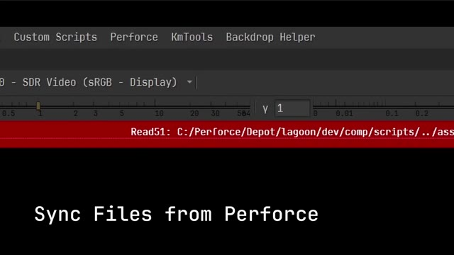

Preview

Perforce Sync Helper (Nuke-Integrated)
Perforce integration in Nuke, allowing users to stay up to date with a single click.
- Finds missing Read media from inside Nuke script
- One-click sync workflow ensures all Read nodes are up-to-date
- Quick and tuneable pruning of files not in active Nuke script